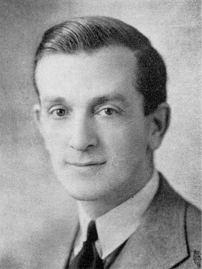

-1-MasterItem.svg)
Stories of Westminster United Church & its People / Page
156
The story of music in Westminster doesn’t end here. In the first decade of 2000 Glen Harrison’s
health began to decline to the point where he needed a rest from 50 years at
Westminster and many
years before that as a music teacher, and as Music Supervisor for Seven Oaks
School Division and
later of Winnipeg School Division (separate article can be found on Glen).
In September of 2009 Glen’s place at the podium was filled by Nathan Poole who came to us after a
stint at First Presbyterian Church in Winnipeg. At the time of this writing
Nathan is still with us.
When his contribution becomes history someone else will hopefully write Nathan’s story of music
making and of the people who have sung with him in Westminster Church Choir.
Herbert Sadler- Organist and Choir Leader
Herb was born in Bristol England in 1894. We have a limited record of
his early life before the family emigrated to Canada in 1911. He was
raised in the Anglican Church, became a a choir boy at the age of six at
Holy Trinity in Ramsgate. His experience as an organist began at age 12
at All Hallows Church in Bristol where, as sub-organist, he received a
thorough training in liturgical music, plainsong, and hymnody. The
family arrived in Winnipeg when Herb was 19 years old.
In Winnipeg from 1915 to 1917 he served as organist at both St George’s
and St. Peter’s Anglican Churches. A highlight of this service was a
presentation of the Maunder work,
Olivet to Calvary
, by the two choirs
and their soloists with Herb at the organ. The review in the paper was
effusive in its praise of all the performers. “… It was an unqualified
success and it is doubtful if better music has ever been rendered in the north
end of the city … A
great deal of the credit must go to Mr. Saddler (sic), the organist who was
perfect throughout …”
In 1917 he enlisted in the Army Medical Corps, Dalhousie University Unit,
serving overseas till the
end of the war. He then returned briefly to St. George’s until he was appointed as our organist. In
Herb’s own words: “ In the early fall of 1919, a very self conscious young man, but lately returned
from active service in France “aimed at the moon” by applying for the position of organist at
Music at Westminster
